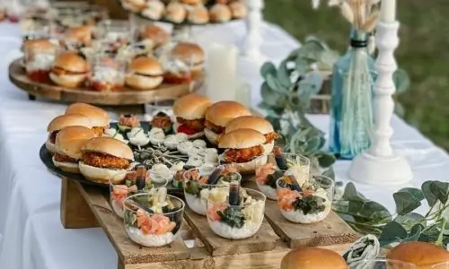
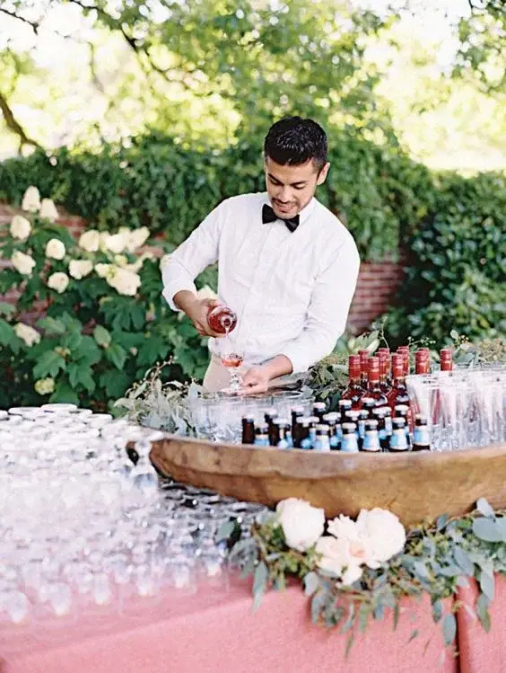
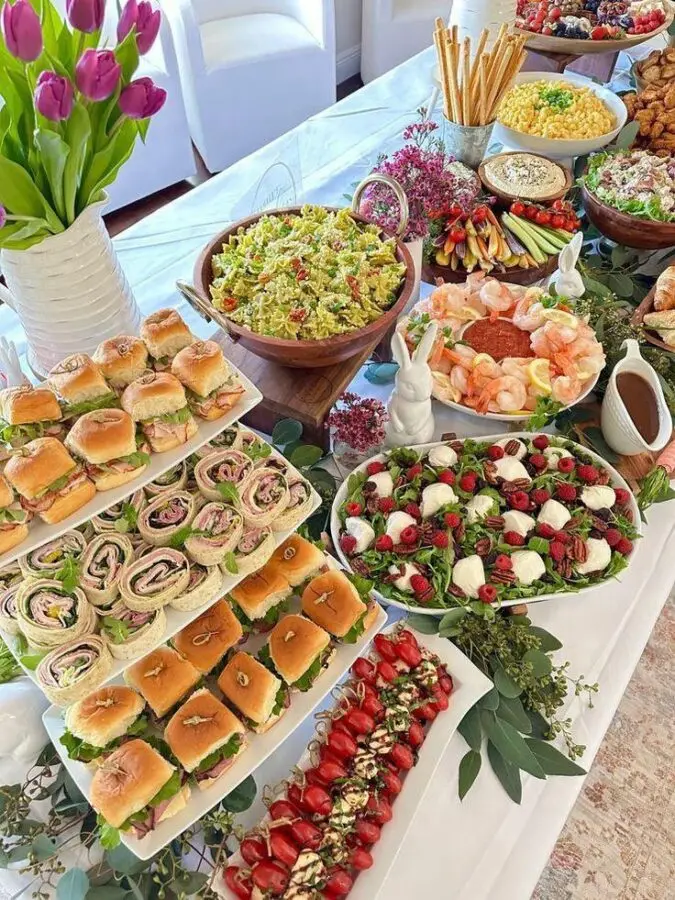
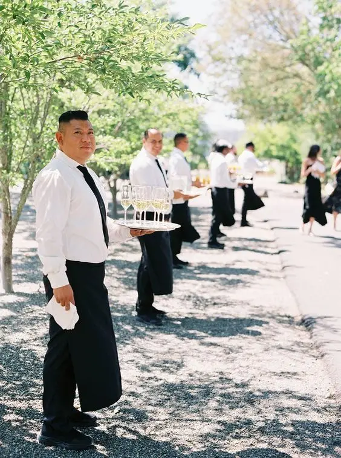
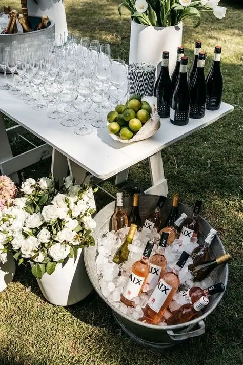
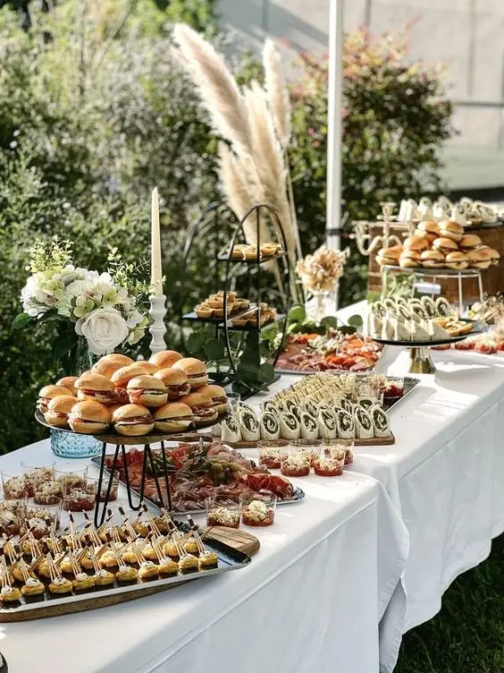
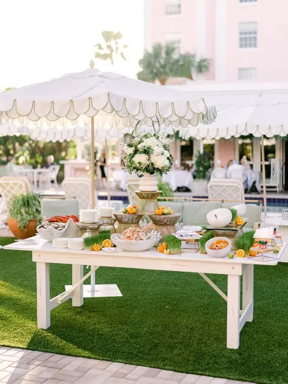
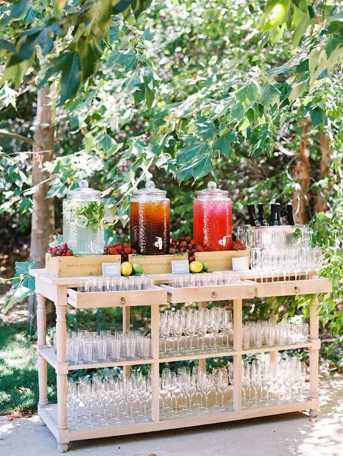

Le mariage est un événement unique dans une vie, et le cocktail dînatoire est l’une des tendances modernes qui gagne en popularité, permettant à chaque couple de rendre ce jour parfait et mémorable. Ce format est idéal pour les mariages modernes et élégants, offrant une alternative décontractée mais chic aux réceptions assises traditionnelles. Le cocktail dînatoire combine la convivialité d’un cocktail avec la générosité d’un dîner, créant une expérience culinaire riche et diversifiée. Voici tout ce que vous devez savoir sur le cocktail dînatoire de mariage, de sa planification à son exécution, pour garantir une célébration réussie et inoubliable.

Qu'est-ce qu'un cocktail dînatoire ?
Un cocktail dînatoire est une réception où les invités peuvent déguster une variété de bouchées et de petites portions de plats, généralement servies sur des plateaux par des serveurs ou disposées sur des tables buffet. Contrairement à un dîner assis, les invités ne sont pas assignés à des sièges fixes. Ils peuvent se déplacer librement, socialiser et savourer une grande diversité de mets. Ce format flexible et dynamique est parfait pour les couples qui souhaitent une réception plus informelle et interactive.
Les avantages d'un cocktail dînatoire
Ambiance décontractée
L’un des principaux avantages du cocktail dînatoire est son ambiance décontractée. Les invités peuvent se déplacer, discuter avec différents groupes de personnes et profiter d’une atmosphère plus dynamique. Cela favorise les interactions sociales et rend l’événement moins formel et rigide. Les invités ne sont pas contraints de rester assis à une table pendant plusieurs heures, ce qui peut souvent rendre la réception plus détendue et agréable.
Flexibilité et diversité
Le cocktail dînatoire permet d’offrir une grande variété de plats, ce qui est idéal pour satisfaire tous les goûts et régimes alimentaires. Des options végétariennes, sans gluten, ou adaptées à d’autres restrictions alimentaires peuvent être facilement intégrées au menu. Cela permet aux invités de goûter une multitude de saveurs sans être limités à un choix unique de plat principal. De plus, la diversité culinaire est souvent un point fort de ce type de réception, car elle peut inclure des influences culinaires de différentes cultures.
Moins de Logistique
L’organisation d’un dîner assis nécessite une planification rigoureuse, incluant la disposition des tables, le choix des places, et un service coordonné. Un cocktail dînatoire simplifie ces aspects, réduisant le stress lié à la logistique. De plus, il peut souvent être plus économique, car il nécessite moins de personnel de service et de location de matériel. Les coûts liés aux décors de table, aux services de vaisselle et aux locations de meubles peuvent être considérablement réduits, permettant une réallocation de budget vers d’autres éléments importants comme la musique ou les animations.
La Planification d'un Cocktail Dînatoire de Mariage

Le choix du Lieu
Le choix du lieu est crucial pour un cocktail dînatoire. Il doit offrir suffisamment d’espace pour que les invités puissent se déplacer librement. Un espace extérieur ou un lieu avec plusieurs salles communicantes peut être idéal pour créer des ambiances variées. Pensez également aux conditions météorologiques si vous optez pour une réception en plein air. Assurez-vous que le lieu dispose d’un bon éclairage, de zones ombragées ou couvertes, et de suffisamment de stations de nourriture et de boissons pour éviter les files d’attente.
Avec ou sans traiteur ?
Faire appel à un traiteur peut grandement simplifier l’organisation de votre cocktail dînatoire. Les traiteurs professionnels offrent des services clés en main, incluant la préparation, le service et souvent la décoration. Ils garantissent une qualité constante des mets et une présentation élégante. Cependant, cela représente un coût supplémentaire. En général, un traiteur spécialisé en cocktails dînatoires facture entre 50 et 150 euros par personne, selon le standing du service et la complexité des plats proposés.
Cependant, organiser un cocktail dînatoire sans traiteur peut permettre de réaliser des économies significatives, avec un budget estimé entre 20 et 50 euros par personne. Cela nécessite toutefois une organisation minutieuse, notamment pour la préparation des mets et la gestion du service. Cette option convient particulièrement aux couples souhaitant une personnalisation maximale et ayant le temps et les ressources pour s’investir dans l’organisation.


La sélection des mets culinaires
La diversité des mets est cruciale pour un cocktail dînatoire réussi. Chaque élément doit être soigneusement choisi pour offrir une expérience culinaire variée et équilibrée. Il est recommandé de prévoir environ 12 à 15 pièces par personne, ce qui permet aux invités de déguster une large gamme de plats sans rester sur leur faim. L’assortiment doit inclure un équilibre entre amuse-bouches, mini-plats et desserts afin de garantir une expérience culinaire complète et satisfaisante. Assurez-vous de proposer des options pour tous les régimes alimentaires et une diversité de saveurs. Pensez également à inclure des plats chauds et froids, ainsi que des options sucrées et salées.
Pour ajouter une touche d’élégance et d’interactivité, envisagez d’inclure des animations culinaires. Par exemple, la découpe en direct de jambon, de saumon ou de foie gras est une attraction de plus en plus prisée. Ces démonstrations, souvent proposées par des traiteurs, permettent non seulement de savourer des produits frais et de qualité, mais aussi de créer un spectacle gastronomique qui captive et ravit les invités. Ces animations apportent une dimension supplémentaire à l’événement, transformant le repas en une véritable expérience sensorielle.
La présentation et le service
La présentation des pièces apéritives est essentielle pour un cocktail dînatoire réussi. Utilisez des plateaux élégants, des verrines colorées, et des présentations créatives pour impressionner vos invités. Le service peut être effectué par des serveurs circulant parmi les invités avec des plateaux, ou via des buffets thématiques où les invités peuvent se servir eux-mêmes. Les stands de nourriture peuvent être organisés par type de cuisine (asiatique, méditerranéenne, etc.) ou par type de plat (entrées, plats principaux, desserts), permettant aux invités de découvrir et de déguster les différentes options à leur rythme.


Les boissons
Un cocktail dînatoire réussi repose non seulement sur la diversité des plats, mais aussi sur une sélection raffinée de boissons. Il est essentiel de proposer une variété de cocktails, vins, bières et boissons non alcoolisées pour satisfaire tous les invités. Pensez à intégrer des cocktails signature qui reflètent votre personnalité ou le thème de votre mariage, ajoutant une touche unique à l’événement. Les bars à cocktails interactifs, où les invités peuvent personnaliser leurs boissons, rencontrent un grand succès et ajoutent une dimension ludique à la soirée.
N’oubliez pas d’inclure des options sans alcool pour les invités qui ne boivent pas d’alcool. Un mixologue expérimenté peut apporter une touche d’élégance et de spectacle en préparant des cocktails devant les invités, rendant l’expérience encore plus mémorable.
Il est aussi courant de commencer le cocktail dînatoire par des rafraîchissements après les cérémonies, comme des eaux aromatisées aux fruits, des thés glacés maison et des jus fraîchement pressés. Ensuite, une soupe de champagne peut être servie pour lancer officiellement le cocktail, suivie d’une sélection de vins fins, de bières artisanales, de cocktails signature et d’autres boissons raffinées.
Animations et Ambiances
Pour créer une ambiance mémorable, pensez à intégrer des animations et des divertissements variés. Un groupe de musique live ou un DJ peut animer la soirée et encourager les invités à danser, surtout s’ils jouent une variété de genres pour plaire à tous. Des stations de cocktail animées par un mixologue offrent une touche interactive en préparant des cocktails personnalisés. Un photobooth avec des accessoires amusants, en lien avec le thème de votre mariage, procure des souvenirs divertissants pour les invités. L’éclairage est également crucial pour l’ambiance : utilisez des guirlandes lumineuses, des bougies et des lanternes pour créer une atmosphère chaleureuse et romantique. Enfin, pensez à la disposition des meubles : des coins salons avec des canapés et des fauteuils confortables où les invités peuvent s’asseoir et se détendre.

Astuces pour Réussir Votre Cocktail Dînatoire de mariage
1 - Anticiper le Flux des Invités
L’organisation de l’espace doit faciliter la circulation des invités. Pour éviter les embouteillages, placez les stations de nourriture et de boissons à différents endroits du lieu, répartissant ainsi les flux de manière plus uniforme. Des zones spécifiques pour la danse, les conversations tranquilles et les activités doivent être clairement définies, permettant aux invités de choisir facilement où ils souhaitent passer leur temps. Assurez-vous que les chemins restent dégagés pour un accès facile et fluide, et que les zones de service, comme les buffets et les bars, soient facilement accessibles et bien indiquées.
2 - Prévoir Suffisamment de Nourriture
Il est crucial de prévoir une quantité de nourriture suffisante. Les invités doivent pouvoir manger à leur faim tout au long de la soirée. Consultez votre traiteur pour estimer les quantités nécessaires en fonction du nombre d’invités. Il est préférable de prévoir un peu plus de nourriture que nécessaire pour éviter de manquer. Pensez à des options de rechange en cas de besoin, comme des plateaux supplémentaires ou des mets prêts à être servis rapidement.
3 - Créer des Zones de Détente
Même si le concept de cocktail dînatoire implique que les invités restent debout, il est important de prévoir des zones de détente avec des sièges confortables où ils peuvent se reposer et discuter tranquillement. Des canapés, des chiliennes et des poufs peuvent offrir des espaces confortables pour ceux qui souhaitent faire une pause. Ces zones peuvent également être décorées de manière thématique pour s’intégrer à l’ambiance générale de l’événement.
4 - Considérer le Timing
Le timing est essentiel pour maintenir une bonne dynamique. Alternez les moments où de nouveaux plats sont servis avec des pauses pour les animations ou les discours. Cela permet de garder l’intérêt des invités et de rythmer la soirée. Planifiez également les moments clés comme les toasts, la première danse, et la découpe du gâteau pour qu’ils s’intègrent naturellement dans le déroulement de la réception.
5 - Personnaliser votre événement
Il est important d’apporter une touche personnelle à votre cocktail dînatoire en incorporant des éléments qui reflètent fidèlement votre style et votre personnalité. Que ce soit à travers la sélection des plats, la décoration ou les animations, personnalisez chaque aspect de l’événement pour le rendre véritablement unique. Pensez à inclure des détails comme des cadeaux pour les invités, un coin avec une urne, un livre d’or et des photographies capturant vos moments les plus précieux ensemble, afin d’ajouter une dimension personnelle et chaleureuse à ce mariage.





En bref...
Le cocktail dînatoire de mariage offre une alternative moderne et élégante aux réceptions traditionnelles, permettant aux couples de créer une expérience culinaire riche et diversifiée. C’est un choix idéal pour ceux qui recherchent une ambiance décontractée et interactive, où les invités peuvent déguster une variété de mets tout en socialisant librement. En personnalisant chaque détail, que ce soit à travers le choix des plats, la décoration thématique ou les animations, vous pouvez véritablement faire de votre événement un moment unique et mémorable. Assurez-vous d’anticiper le flux des invités, de prévoir suffisamment de nourriture et de créer des zones de détente confortables. Avec une planification soignée et une attention aux détails, votre cocktail dînatoire de mariage sera une célébration réussie qui laissera des souvenirs inoubliables à tous vos invités.